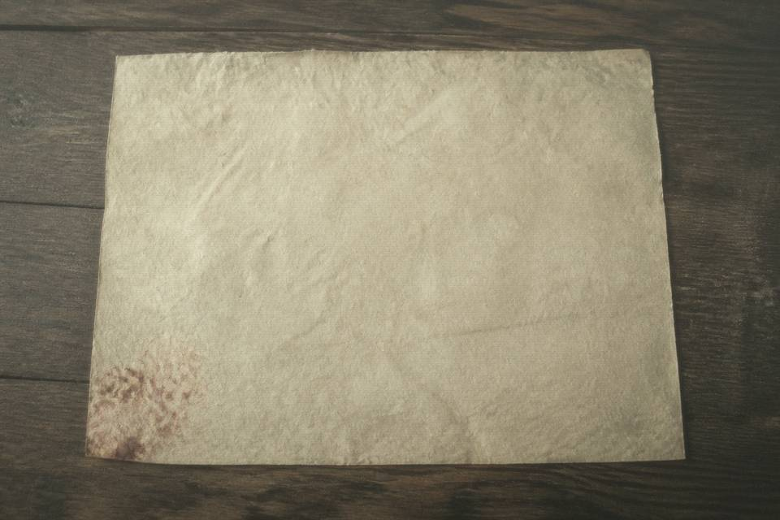

Maidiquan scan · public cataloging

Entered from the 2016 grave-deed exhibit card. Vermilion on the brick is blurred in the scan. Fields below follow the exhibit card, not the West Stack original slip. If that slip has another transcription, it is not on this page.
| Check-item | Public layer as seen |
|---|---|
| Time | 1983, winter month (dongyue), day 16 |
| Qianzhu | Hou Wanshi |
| Wangzhe | Hou Chengshan |
| Sizhi | east to the stone steps, west to the ditch, south to the old locust, north to the ridge spine |
| Zhongbao | Houtu deities |
| Plot | Nanling cemetery, West Slope |
This page can only prove the web catalog is written this way. It does not prove who was present on the burial day, and it does not prove every character on the brick was read in full. The price line is missing on the exhibit card. Do not fill the gap with formula wording.
Return to catalog Notice extract The deed beside it Go fill the viewing note
public
Footer: public cataloging from exhibit card · original slip is not on this page · night shift may only copy into the draft